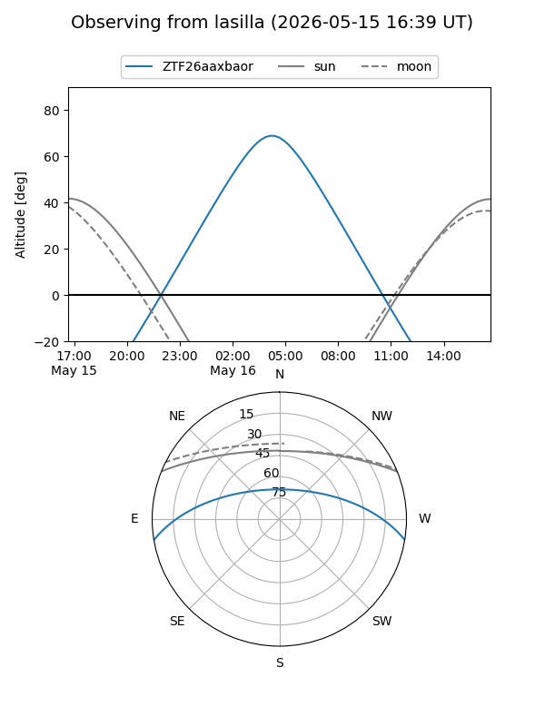
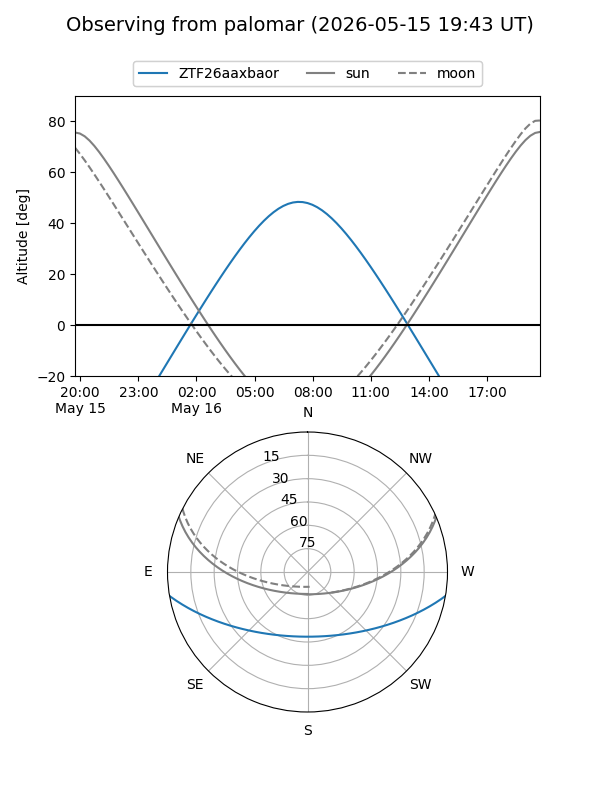

ZTF26aaxbaor
Target ZTF26aaxbaor at 2026-05-16 07:49
Aliases and brokers:
FINK: link
Lasair: link
ALeRCE: link
alt names
ZTF26aaxbaor (ztf,fink_ztf)
Coordinates:
equatorial (ra, dec) = 226.2449,-8.13076
equatorial (HMS+DMS) = 15:04:58.78,-08:07:50.73
galactic (l, b) = (350.2252,+42.15728)
Flags:
Photometry:
last ztfg=20.60
1 ztfg detections
Lightcurve
Visibility


Additional plots